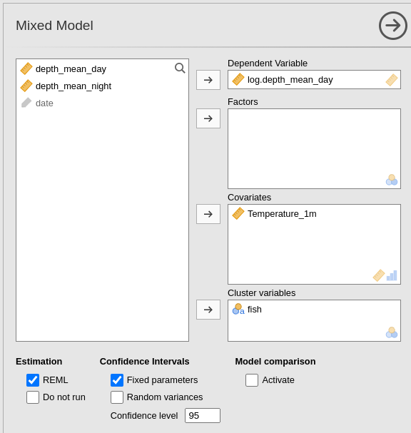

Mixed Models: Autocorrelation in logitudinal data
keywords Mixed models, repeated measures, multilevel models, ANOVA, autocorrelation
3.0.7
Draft version, mistakes may be around
Intro
In this example, we conduct analyses of a repeated measures design in which we account for temporal autocorrelation among repeated measures. This means that we use a mixed model in which the random effects do not capture the entire dependency among measures, and an additional correlation should be included in the model. We utilize the GAMLj module in jamovi. To follow the examples with the software, be sure to install the GAMLj module from within the jamovi library.
The design and the analyses are inspired by Sean Anderson’s course on mixed model in R. If you are interested in checking the results with R, you can find all the R code on Anderson’s GitHub page. The data can be downloaded from Anderson’s github site
The research design
The design regards the effect of ocean temperature on how deep
individually tagged Atlantic cods dove along the Norwegian coast (Freitas et al. 2016). The data regards 48
tagged fish (variable fish), each fish is measured on
average 105 times, with range [6,159]. Measures correspond to the
average depth of the dives in a day (depth_mean_day).
Together with this measure, the date (date) of measurement,
and the temperature of the water (Temperature_m1).
Statistically, we simply need to estimate the relationship between temperature and dive depth, but we have clustered data, because each fish is repeatedly tested over several days. Interestingly, the date, and thus the season, may influence the temperature and also the fish behavior, so it is hard to believe that consecutive days measures are not more correlated than measures far apart in time.
Some Theory
One of the reasons the mixed model is used to analyze clustered data is that it can capture dependency in the data. Indeed, if scores (repeated measures) are more similar within clusters than across clusters, dependency arises, and the GLM assumptions of independent residuals are violated. However, within each cluster, we assume that the scores (cases) are independent, meaning that they represent a random sample of scores from that particular cluster. If so, the variance of the intercepts indicates the degree of dependency, showing how much the average scores of clusters differ. The mixed model can be used to model repeated measures because, by capturing differences in the average scores across individuals, one is also capturing the correlation among repeated measures. However, by capturing the correlation among repeated measures using random intercepts, one assumes that all pairs of repeated measures have the same correlation. This is called compound symmetry. Technically, by allowing the intercepts to vary, one captures the correlation among repeated measures. If this correlation is the same across pairs of measures, the residuals of the model will be independent of each other, satisfying the model assumptions.
When the correlation among pairs of measures is not constant across all pairs, the residuals will not be independent of each other, potentially leading to biased results. To address this, we can introduce an “extra correlation” among residuals to be estimated and incorporated into the model. However, estimating all these extra correlations among repeated measures can be computationally intensive and may result in convergence issues.
For instance, if there are three repeated measures, the model must estimate 3⋅(3−1)/2=3 correlations. But if there are 10 measures, the number of correlations increases to 10⋅(10−1)/2=90/2=45. To simplify the estimation process, researchers often avoid estimating all these correlations and instead impose certain restrictions on the structure of the correlation matrix. This is commonly referred to as modelling covariance of residuals.
For temporally ordered data, a common restriction is referred to as Autoregressive of order 1 (AR1). This restriction implies that any two consecutive measures are correlated with a coefficient of \(\phi\), any two measures that are two time points apart are correlated with a coefficient of \(\phi^2\), and so on. In other words, the correlation between any two measures that are \(t\) time points apart is \(\phi^t\). This means that the model only needs to estimate a single value for the correlation (\(\phi\)), regardless of the number of time points in the data. This simplifies the estimation process. In practice, we are estimating a model in which the correlation among repeated measures is expected to decrease as the time lags increase. It is clear that the AR1 error covariance requires the repeated measures to be ordered along time, or any other design factor that can be considered ordered. In the fish example, for instance, each fish is measured in different days, and days are naturally ordered, so it is very likely that a measure taken today will be more similar to the measure taken yesterday than a measure taken one month ago. In other words, consecutive measures are likely to be more correlated than measures taken several days apart. If this is the case, the residuals will not be independent and the results possibly biased. Thus, the model should be inspected and a AR1 error covariance matrix should be tested.
Model without autocorrelation
We start by analyzing the design with a standard mixed model, with
fish as clustering variable, random intercepts and slopes
across clusters, Temperature_m1 as independent variable and
dive depth as dependent variable. Following Sean Anderson’s
alysis, we log-transformed the dependent variable
depth_mean_day, producing `log.depth_mean_day, so our
results can be replicated in R following Anderson’s examples.

Model set up
The GAMLj Mixed model interface is set up with the variables appropriated role:

Then the random coefficients:
Results
As a reference for later on, let’s review the results: The first table gives us a few information about the model:
Then we have the overall model \(R^2\)’s and tests and the independent variable main effect test:
Then we have the regression coefficients:
and finaly the random component:
Assumptions
Now we recall that the data are likely to show autocorrelation in the residuals, because closer in time measures may show a larger correlation than measures far apart. We have seen that this occurence may distort the residuals, and thus we can inspect the residuals within each cluster to see how they look.

We ask for the plot residuals vs predicted, both in one single plot and as a grid, with one panel for each cluster.

The Residuals-Predicted by cluster plot shows the scatterplot between the residuals of the model (Y-axis) and the predicted values (X-axis). Independent residuals should be distributed randomly around the horizontal 0-line (gray line). Instead, it seems that for many clusters the residuals are downward oriented and definitily not randomly scatterted around the line.
An even clear picture can be obtained by inspecting the Residuals-Predicted Grid:
It is clear that for many clusters ( for instance
Cod_6755 or Cod_6795) the residuals are not
randomly scattered around the horizontal line, but they show a clear
download alignment crossing the 0-line. This is a clear sign that the
model residuals are not following the independence assumption. We can
try to remedy that including an extra-correlation for residuals in the
model.
Model with autoregressive residuals
In GAMLj, autoregressive residuals covariance can be chosen by simply select it in the Residuals Structure panel.

The Indentity is the default, which is basically not
allowing any extra-correlation among residuals, so the dependency is all
captured by the random effects. Unstructured means that
every correlation is estimated in the data, which in our example would
be incredibly slow and non-sensical. This option is useful in repeated
measures experiments with unordered repeated measures.
Autoregressive indicates AR(1), so autoregressive of the
first-order (see above).
Now the results:

Although the new results are not substantially different as compared with the previous model ones, we do observe different values for the tests and the estimates. The standard errors are different, and so are the inferential tests (t-tests and F-tests). In this particular example the conclusions drawn from the two models would be the same, but in general they may not coincide.
We can now look at the residuals distribution with clusters and check whether the new model is better than the previous one:
We can see that now the residuals are much more randomly scattered around the X-axis. There seem to be more cases on the right-side of the plot than on the left, but that is not an issue related with the correlation among residuals. They are clearly evenly distributed around the predicted value. The residuals seem also well distributed within the majority of clusters. We can then conclude that our second model is more accurate and go on reporting it.
Comments?
Got comments, issues or spotted a bug? Please open an issue on GAMLj at github or send me an email